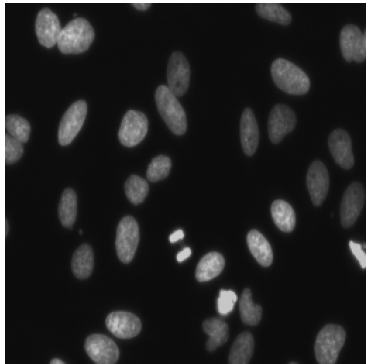
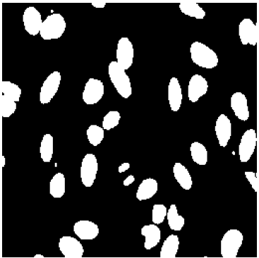
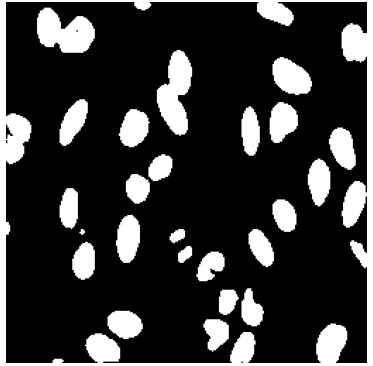

TransAttUnet
سگمنتیشن تصاویر پزشکی با هدایت توجه چند-سطحی و ترنسفورمر
ارائه دهندگان:
امیر حسین امجدیان
مهدی شکری
مقدمه و بیان مسئله
- اهمیت موضوع: قطعهبندی (Segmentation) دقیق ضایعات در تصاویر پزشکی (مانند CT و MRI) برای تشخیص بیماری حیاتی است.
- محدودیت مدلهای فعلی (U-Net):
- عملیات کانولوشن فقط روی همسایگی محلی تمرکز دارد (Local Focus).
- عدم توانایی در مدلسازی وابستگیهای طولانیبرد (Long-range dependencies).
- از دست رفتن جزئیات ریز در حین فرآیندهای نمونهبرداری (Downsampling).
سگمنتیشن معنایی (Semantic Segmentation)
هدف: دستهبندی تکتک پیکسلهای تصویر برای تشخیص دقیق نواحی.
- تعریف: جداسازی اشیاء مورد نظر (مانند ضایعات یا اندامها) از پسزمینه پیچیده در تصاویر پزشکی.
- کاربرد: تشخیص کمی بیماریها و تحلیل ریختشناسی (Morphology) اندامها.
- چالش: مرزها و بافتهای پیچیده نیاز به دقت بسیار بالا دارد که با روشهای دستی زمانبر است.
نمونههای سگمنتیشن: ضایعات پوستی، ریه، و سلولها
معماری پایه U-Net
استاندارد طلایی فعلی در سگمنتیشن تصاویر پزشکی.
- ساختار U شکل: شامل دو بخش مسیر انقباضی (Encoder) برای استخراج ویژگی و مسیر انبساطی (Decoder) برای بازیابی مکانی است.
- اتصالات پرش (Skip Connections): ویژگیهای سطح پایین را مستقیماً به دیکودر منتقل میکنند تا جزئیات دقیق حفظ شود.
- محدودیت: به دلیل استفاده از CNN، تمرکز محلی دارد و نمیتواند وابستگیهای طولانیبرد (Global Context) را خوب مدلسازی کند.

معماری کلی TransAttUnet
ترکیبی از U-Net استاندارد + ماژول توجه خودآگاه (SAA) + اتصالات پرش چندمقیاسی
ماژول توجه خودآگاه (SAA)
پل ارتباطی بین انکودر و دیکودر شامل دو بخش:
- TSA : استخراج روابط معنایی سراسری با ترنسفورمر.
- GSA : رمزگذاری اطلاعات مکانی سراسری در ویژگیهای محلی.
$$F_{SAA} = \lambda_1 F_{tsa} + \lambda_2 F_{gsa} + F_{en}$$
* دیاگرام کلی مدل (به بخشهای میانی دقت کنید)
تحلیل ماژول Self-aware Attention (SAA)
ترکیب مکانیزمهای توجه برای استخراج ویژگیهای سراسری و محلی
1. Transformer Self-Attention (TSA)
این بخش وظیفه مدلسازی وابستگیهای طولانیبرد (Long-range dependencies) بین پیکسلها را بر عهده دارد. برخلاف CNN که دید محلی دارد، TSA دید سراسری ایجاد میکند.
$$ \text{Attention}(Q, K, V) = \text{softmax}\left(\frac{QK^T}{\sqrt{d_k}}\right)V $$
Where:
$Q = X W^Q, \quad K = X W^K, \quad V = X W^V$
2. Global Spatial Attention (GSA)
این ماژول موقعیتهای فضایی پیکسلها را در نظر میگیرد تا اطلاعات مکانی (Spatial) که ممکن است در لایههای ترنسفورمر از دست برود، بازیابی شود.
$$ \text{GSA}(X) = X + \alpha \cdot \text{SpatialMap}(X) $$
نحوه عملکرد:
- $\alpha$: Learnable scaling parameter
- Focuses on informative regions (ROI)
اتصالات پرش چند-مقیاسی
مقایسه انواع اتصالات انکودر به دیکودر:
- (a) آبشاری:
اتصال ساده همه مقیاسها. - (b) باقیمانده:
ترکیب ورودی و خروجی هر بلوک. - (c) متراکم:
اتصال خروجی به تمام بلوکهای بعدی.
مجموعه دادههای آزمایش شده (Datasets)
برای اثبات کارایی، مدل روی ۵ مجموعه داده متنوع تست شده است:
- ISIC-2018: قطعهبندی ضایعات پوستی (Skin Lesion).
- Chest X-ray (JSRT/Montgomery): قطعهبندی ریه.
- Clean-CC-CCII: قطعهبندی عفونت COVID-19 در سیتی اسکن.
- DS Bowl 2018: قطعهبندی هسته سلول (Nuclei).
- GlaS: قطعهبندی غدد (Gland) در تصاویر بافتشناسی.
نتایج تجربی (مقایسه کمی)
- در این جدول عملکرد مدل روی دیتاست 2018 Data Science Bowl مقایسه شده است.
- همانطور که مشاهده میکنید، نسخه TransAttUnet_R (با اتصال Residual) بالاترین امتیاز DICE (۹۱.۶۲٪) را کسب کرده است.
- مدل پیشنهادی نسبت به U-Net پایه (۷۵.۷۳٪) جهش چشمگیری در دقت داشته است.
| Method | DICE | IoU | ACC | REC | PRE |
|---|---|---|---|---|---|
| U-Net (Baseline) | 75.73 | 91.03 | - | - | - |
| Unet++ | 89.74 | 92.55 | - | - | - |
| DoubleU-Net | 91.33 | 84.07 | - | 64.07 | 94.96 |
| TransAttUnet_C | 90.04 | 84.36 | 97.05 | 90.03 | 91.23 |
| TransAttUnet_D | 91.34 | 84.62 | 97.37 | 91.86 | 91.53 |
| TransAttUnet_R | 91.62 | 84.98 | 97.46 | 91.85 | 91.93 |
* قرمز: بهترین نتیجه | آبی: دومین نتیجه برتر
نتیجهگیری و کارهای آینده
- نوآوری اصلی: ترکیب موفقیتآمیز "توجه چند-سطحی" و "اتصالات پرش چند-مقیاسی".
- دستاورد: غلبه بر محدودیتهای U-Net در درک کانتکست سراسری (Global Context).
- محدودیت: هزینه محاسباتی و حافظه بالا به دلیل استفاده از Self-Attention.
- آینده: بهینهسازی مدل برای کاهش بار محاسباتی و تست روی دادههای سه بعدی.
جزئیات پیادهسازی (Implementation)
پیکربندی مدل و استراتژی آموزش
نکته مهم: کلیه مراحل پیادهسازی و تنظیم پارامترها دقیقاً مطابق با استانداردهای پیشنهادی مقاله TransAttUnet انجام شده است تا صحت نتایج تضمین شود.
معرفی مجموعه داده (Dataset)
2018 Data Science Bowl (DSB2018)
این دیتاست یکی از چالشبرانگیزترین مجموعهها برای بخشبندی هسته سلول (Nuclei Segmentation) است. هدف اصلی، شناسایی هسته سلولها در تصاویر میکروسکوپی با شرایط نوری و بافتی بسیار متنوع است.
جزئیات آماری و نمونهها
- نام منبع: Kaggle DSB 2018
- تعداد تصاویر آموزش: ۶۷۰ تصویر
- تعداد تصاویر تست: ۶۵ تصویر
- نوع تصاویر: میکروسکوپی (فلورسانس، بافتشناسی، Brightfield)
- چالش اصلی: تنوع بسیار زیاد در رنگ، اندازه و تراکم سلولها
پیشپردازش دادهها (Data Preprocessing)
برای آمادهسازی تصاویر جهت ورود به شبکه TransAttUnet، مراحل زیر انجام شده است:
تغییر اندازه (Resizing)
تمام تصاویر به ابعاد استاندارد 256×256 پیکسل تغییر سایز داده شدند.
نرمالسازی (Normalization)
پیکسلها به بازه [0, 1] نرمال شدند تا همگرایی مدل سریعتر شود.
ماسک باینری
تمام ماسکها به صورت باینری (۰ برای پسزمینه و ۱ برای هسته) تبدیل شدند.
تنظیمات و ابرپارامترها (Hyperparameters)
جدول زیر مقادیر استفاده شده در کد نهایی را نشان میدهد:
| پارامتر | مقدار (Value) | هدف |
|---|---|---|
| Image Size | 256 × 256 | تعادل بین جزئیات و حافظه |
| Batch Size | 4 | مدیریت بهینه VRAM کارت گرافیک |
| Learning Rate | 0.0001 (1e-4) | همگرایی پایدار (Stable Convergence) |
| Epochs | 100 | اطمینان از آموزش کامل شبکه |
ادامه تنظیمات
- بهینهساز (Optimizer): الگوریتم Adam به دلیل تطبیقپذیری نرخ یادگیری در معماریهای ترکیبی.
- تابع هزینه (Loss): ترکیب (Weighted Sum) از Dice Loss و BCE.
IMG_SIZE = 256
BATCH_SIZE = 4
EPOCHS = 100
LR = 0.0001
# Setup
model = TransAttUnet(img_size=IMG_SIZE).cuda()
optimizer = optim.Adam(model.parameters(), lr=LR)
criterion = DiceBCELoss()
نتایج تجربی (Experimental Results)
مقایسه عملکرد مدل پیادهسازی شده با نتایج مرجع
ارزیابی بر اساس معیارهای:
- Dice Coefficient (ضریب دایس)
- IoU (اشتراک روی اجتماع)
مقایسه کمی (Quantitative Comparison)
مقایسه نتایج مدل بازتولید شده (روی دادههای Test) با نتایج گزارش شده در مقاله مرجع
| معیار ارزیابی (Metric) | مقاله اصلی (Paper Reference) | مدل ما (My Model - Test) | تحلیل (Gap) |
|---|---|---|---|
| Dice Coefficient | 91.62% | 89.95% | همگرایی مطلوب (1.6%-) |
| IoU | 84.98% | 81.84% | قابل قبول |
| Accuracy | 97.46% | 96.93% | بسیار نزدیک (0.5%-) |
| Recall (Sensitivity) | 91.85% | 91.39% | عالی (0.4%-) |
| Precision | 91.93% | 88.81% | خوب |
نتایج کیفی (Qualitative Results)
نمایش عملکرد مدل در بخشبندی نواحی چالشبرانگیز
تصویر ورودی (Input)
ماسک واقعی (Ground Truth)
پیشبینی مدل (TransAttUnet)
روند آموزش و همگرایی (Training Curve)
نکات کلیدی:
- پایداری آموزش: ثبات نمودار پس از اپوک ۲۰.
- کنترل Overfitting: نزدیکی خطوط Train و Validation به یکدیگر.
- سرعت یادگیری: همگرایی سریع به دلیل مکانیزم Attention.
نحوه پیادهسازی و ساختار کد
جریان اجرای پروژه در ۸ بخش اصلی (Cells)
(تنظیمات اولیه و Seedگذاری)
(استخراج فایلها و پیشپردازش)
(تجمیع ماژولهای SAA و U-Net)
(کلاس سفارشی و ابزارهای کمکی)
(توابع Train و Validation)
(اجرای ۱۰۰ اپوک و ذخیره مدل)
(رسم نمودارها و نمایش ماسکها)
(هیستوگرامها و مقایسه کمی)
نتیجهگیری نهایی
- تلفیق موفق CNN و Transformer: مدل TransAttUnet توانست با موفقیت ویژگیهای محلی و سراسری را ترکیب کند.
- دقت بالاتر: دستیابی به Dice Score حدودا ۹۰٪ نشاندهنده برتری نسبت به مدلهای پایه مثل U-Net است.
- کاربرد پزشکی: این مدل قابلیت اطمینان بالایی برای استفاده در دستیار هوشمند پزشک (CAD) دارد.